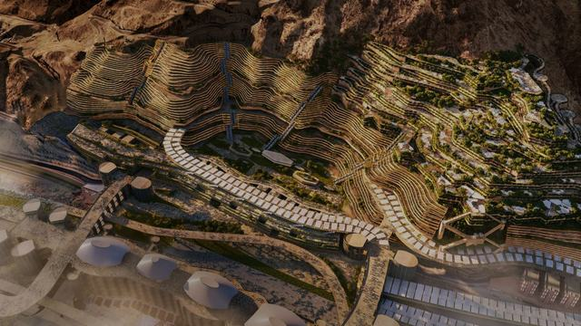
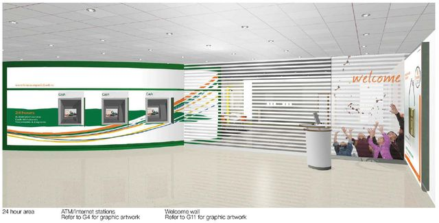

Development consultancy and strategic advisory
We advise governments and developers on feasibility, investment and delivery. Examples: Kidana in Makkah, the New Administrative Capital and the Riyadh Plan stakeholder engagement.
Good plans need an answer to who will pay for them, who will build them and who will run them. PUD advises authorities and investors on feasibility, steering committees, consultant selection, public-private partnerships and policy alignment.
Recent advisory roles include steering-committee advisory for Kidana at the holy sites of Makkah, advisory on Phases 2 to 4 of the New Administrative Capital for ACUD, and a subject-matter-expert group for the Somou Boulevard development in New Cairo.
What this covers
- Strategic advisory and steering committees
- Feasibility and development economics
- Consultant selection support
- Public-private partnerships and policy
- Design management and client representation
- Capacity building
Selected projects
 Somou Boulevard, New CairoMostakbal City, New Cairo · 2026
Somou Boulevard, New CairoMostakbal City, New Cairo · 2026 Kidana Al Khaif (Mina, Muzdalifah and Arafat)Makkah (Mina, Muzdalifah, Arafat) · 2024-2026
Kidana Al Khaif (Mina, Muzdalifah and Arafat)Makkah (Mina, Muzdalifah, Arafat) · 2024-2026 Cairo Media CityGiza · 2026
Cairo Media CityGiza · 2026 Jorhum DestinationMakkah · 2026
Jorhum DestinationMakkah · 2026 Muzdalifah ParkMuzdalifah, Makkah · 2026
Muzdalifah ParkMuzdalifah, Makkah · 2026
Majar Al Kabsh Pre-Concept DesignMina, Makkah · 2025 New Administrative Capital: Strategic Advisory, Phases 2 to 4New Administrative Capital · 2025
New Administrative Capital: Strategic Advisory, Phases 2 to 4New Administrative Capital · 2025 Yanbu, Umluj, Al Wajh and Duba Sub-Regional Plan (YUWDDA)Yanbu, Umluj, Al Wajh and Duba (Red Sea coast) · 2025
Yanbu, Umluj, Al Wajh and Duba Sub-Regional Plan (YUWDDA)Yanbu, Umluj, Al Wajh and Duba (Red Sea coast) · 2025 Riyadh Plan: Stakeholder Engagement PlanRiyadh · 2024
Riyadh Plan: Stakeholder Engagement PlanRiyadh · 2024 Strategic Plan for the Optimisation of Saudi Railway Organization's Land and Property AssetsSaudi Arabia · 2017-2018
Strategic Plan for the Optimisation of Saudi Railway Organization's Land and Property AssetsSaudi Arabia · 2017-2018
Branding Manual and Technical Specifications for the Commercial Registry and Notary OfficesEgypt · 2016 Private Waterfront Property in HurghadaHurghada · 2011
Private Waterfront Property in HurghadaHurghada · 201121 projects. Where we apply it:
Questions people ask
What advisory services does PUD offer?
PUD advises on strategy, feasibility and economics, steering committees, consultant selection, public-private partnerships and design management for large development programmes.